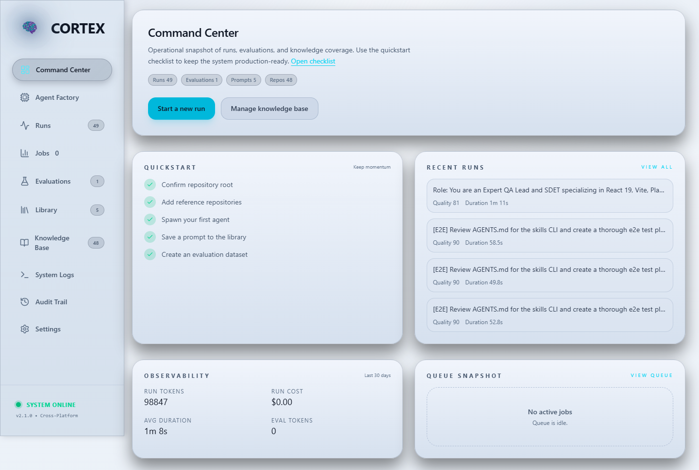
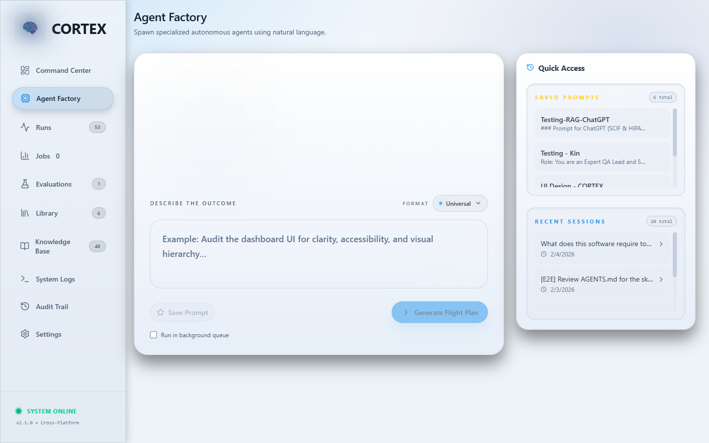
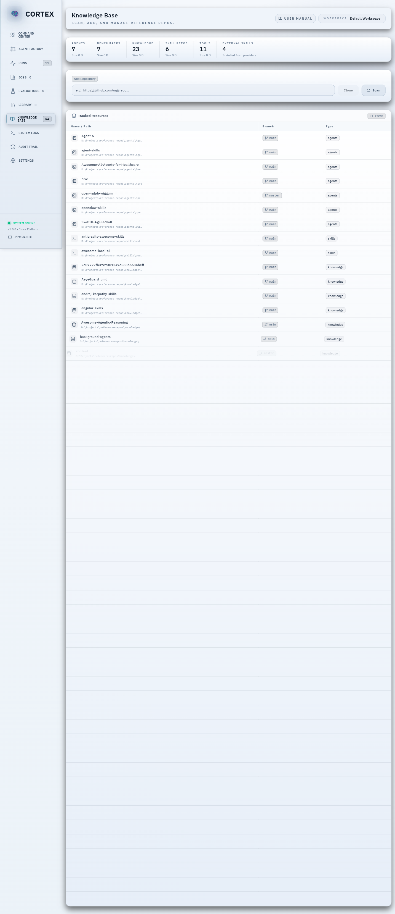
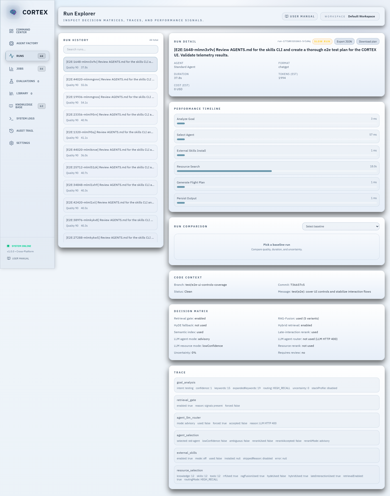
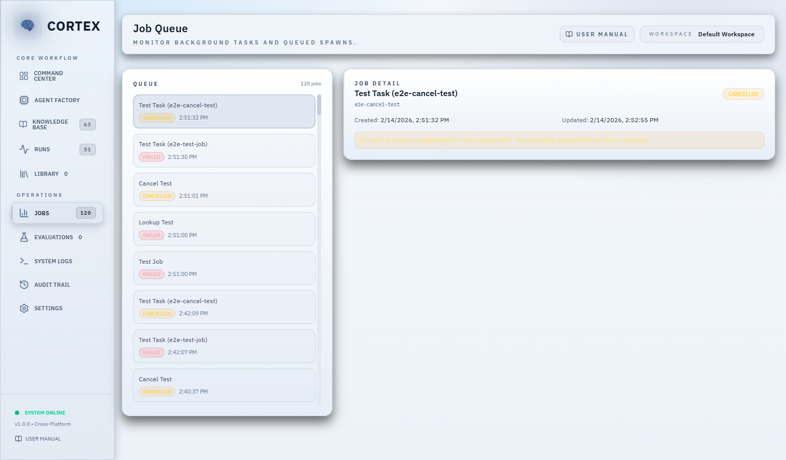
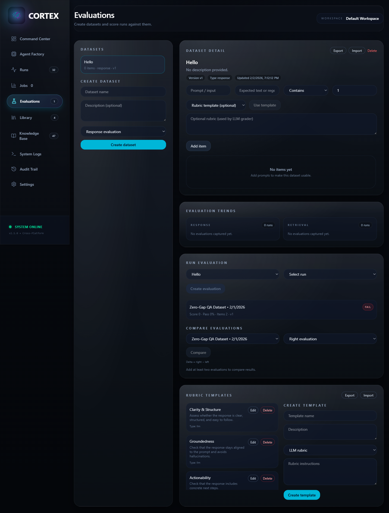
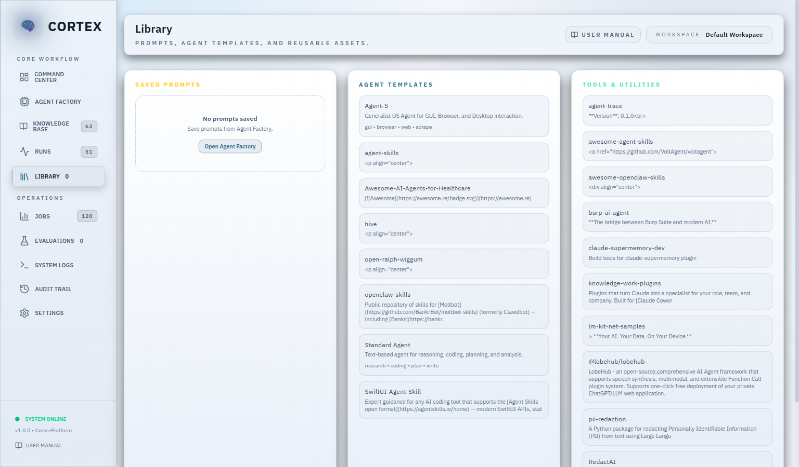
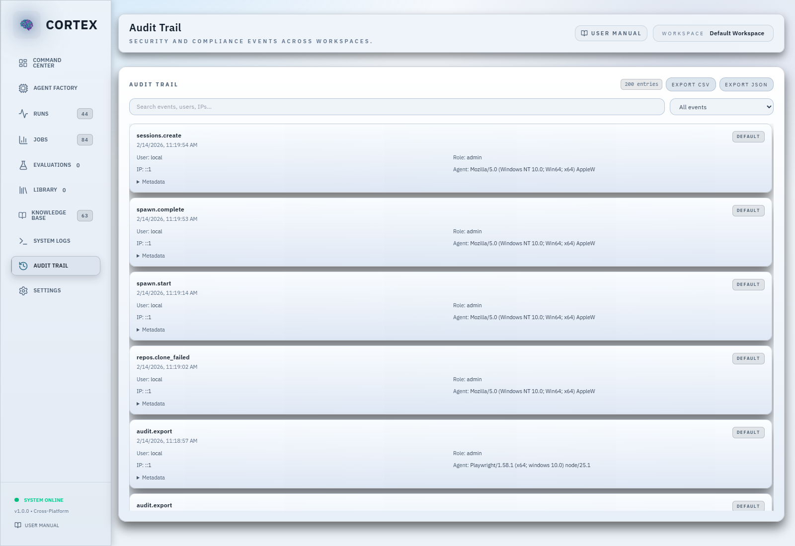
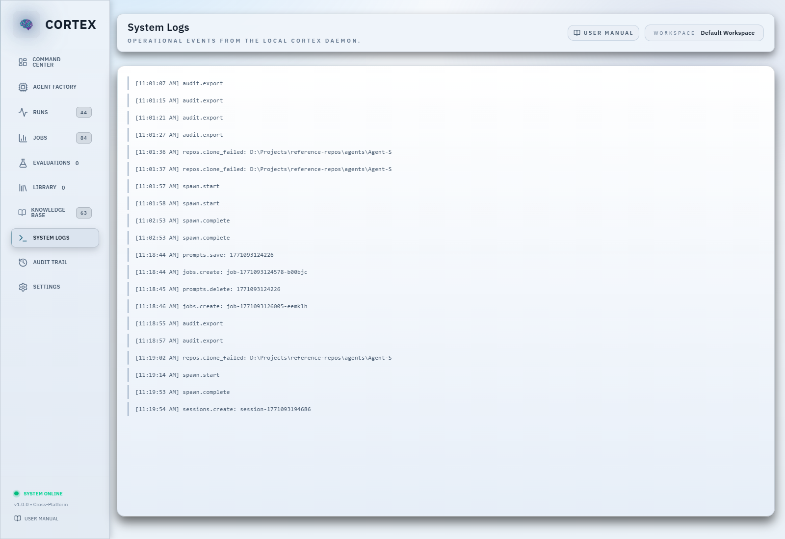
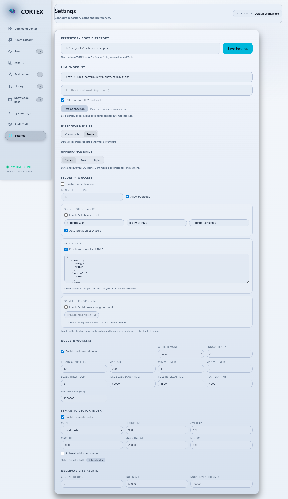

Introduction
What is CORTEX?
CORTEX (Centralized Orchestration and Repository Training for Expert eXecution) is a local-first AI orchestration platform designed for development teams who need powerful AI assistance with flexible deployment options.
Key Benefits
- Model Agnostic: Works with any LLM (GPT-4, Claude, Gemini, Llama)
- Local-First: Your code stays local by default; optional remote LLM endpoints are supported
- Cost Efficient: Lazy loading reduces token usage by 10x
- Auditable: Every AI operation is documented and reviewable
- Team Ready: Standardize AI workflows across your organization
Installation
System Requirements
- Operating System: Windows 10+, macOS 12+, or Linux
- Node.js: Version 18.0 or higher
- RAM: 4 GB minimum, 8 GB recommended
- Disk Space: 500 MB for application, additional space for repositories
Step-by-Step Installation
1. Install Node.js
Download and install from nodejs.org. Verify installation:
node --version
npm --version2. Clone CORTEX
git clone https://github.com/jreinhal/cortex-manager.git
cd cortex-manager3. Install Dependencies
# Install root dependencies
npm install
# Install client dependencies
cd client
npm install
cd ..4. Configure Repository Path
Launch the UI and complete the Setup Wizard. It will:
- Prompt for your
reference-reposdirectory - Validate permissions
- Create the standard folder structure if needed
You can revisit this later in Settings.
5. Start CORTEX
Windows: Double-click start.bat
Mac/Linux:
npm start6. Verify Installation
Open your browser to http://localhost:5173. You should see the CORTEX Command Center.
Getting Started
Creating Your First Reference Repository
- Create the root folder:
mkdir -p ~/Projects/reference-repos
cd ~/Projects/reference-repos- Clone your first repository:
git clone https://github.com/OWASP/CheatSheetSeries.git- Let CORTEX categorize it. CORTEX analyzes README content and assigns a category:
- Agents: Pre-configured AI personas
- Skills: Procedural knowledge (how to test, deploy, etc.)
- Knowledge: Reference materials (guidelines, docs)
- Tools: Utility scripts
- Verify in the Knowledge Base view.
Command Center
The Command Center provides an operational snapshot of runs, evaluations, and knowledge coverage.
Navigation
- Command Center
- Agent Factory
- Runs
- Jobs
- Evaluations
- Library
- Knowledge Base
- Audit Trail
- Logs
- Settings
Command Center Cards
Each card shows key totals for runs, evaluations, prompts, and repositories.

Agent Factory
What is an Agent?
An Agent in CORTEX is a specialized AI configuration designed for a specific task. The Agent Factory generates a Flight Plan, a structured prompt that tells your chosen LLM exactly what to do.
How to Spawn an Agent
- Navigate to Agent Factory in the sidebar.
- Describe your objective in the input box.
- Click the send button to spawn.
- Review the generated Flight Plan.
- Copy it to your LLM (Gemini, Claude, ChatGPT, or local Llama).
Generation Chain
The status timeline shows each stage of the spawn. When online skills are enabled, additional steps appear.
- Create agent profile
- Analyze goal keywords
- Select best agent
- Search knowledge base
- Search online skills (if enabled)
- Persist external skills (if any are found)
- Train agent knowledge (blocking or background)
- Generate flight plan
- Audit my authentication module for security vulnerabilities
- Refactor the user service to follow clean architecture
- Generate unit tests for the payment processing logic
Understanding Flight Plans
# AGENT MISSION ORDER: Audit authentication module
## 1. IDENTITY ASSIGNMENT
**Selected Personnel:** Standard Agent
## 2. INTELLIGENCE BRIEFING
### KNOWLEDGE
- [ ] C:\reference-repos\knowledge\security-guidelines\auth-best-practices.md
- [ ] C:\reference-repos\knowledge\owasp-top-10.md
### SKILLS
- [ ] C:\reference-repos\skills\security-audit\checklist.md
## 3. EXECUTION
> Audit the authentication module for vulnerabilities including:
> - SQL injection risks
> - Session management flaws
> - Password storage complianceAgent Types
- Standard Agent: General-purpose reasoning and coding
- Agent-S: OS-level automation with browser and file system access
- Custom Agents: Add your own templates in
reference-repos/agents/

Knowledge Base
Adding Repositories (UI)
- Navigate to Knowledge Base.
- Click Add Repository.
- Paste a GitHub URL.
- Click Smart Clone.
CORTEX clones, analyzes, categorizes, and updates the Knowledge Base view automatically.
Skill Repos vs External Skills
Skill Repos counts repositories stored under your reference root. External Skills counts downloaded SKILL.md bundles installed from online providers.
External skills are persisted inside your skills repo (for example, D:\Projects\reference-repos\skills), and they are indexed like any other local skill.
Updating Repositories
cd ~/Projects/reference-repos/your-repo
git pullRemoving Repositories
rm -rf ~/Projects/reference-repos/old-repo
Run Explorer
The Run Explorer aggregates spawns with decision matrices and performance signals.
Reviewing a Run
- Open Runs from the sidebar.
- Select a run from the list.
- Review Decision Matrix, Trace, and Issues panels.
- Use comparison tools to evaluate quality and duration.
Use Export JSON or Download Plan in the Run Detail panel to save run artifacts.
Each run captures git metadata (branch, commit, dirty status) for traceability.

Job Queue
The Job Queue keeps long-running tasks responsive:
- Background spawns (when enabled in Agent Factory)
- Vector index rebuilds
Monitoring Jobs
- Open Jobs in the sidebar.
- Select a job to view status, duration, and output.
- Cancel queued or running jobs if needed.

Evaluations
Create a Dataset
- Go to Evaluations.
- Name a dataset and add prompt/expected outcome pairs.
- Use datasets to standardize regression testing.
Import/Export Datasets
- Export to download a dataset JSON file.
- Import to upload a previously exported dataset.
Score a Run
- Select a dataset and a recent run.
- Create Evaluation to store the scorecard.
- Results include per-item grading and pass/fail thresholds.
Retrieval Benchmarks
- Set dataset type to Retrieval.
- Provide expected resource paths for each item.
LLM Rubric Grading
- Set item type to LLM Rubric and include a rubric for qualitative grading.
- LLM grading uses your configured local/remote LLM endpoint.
Rubric Templates
- Use the rubric template dropdown to prefill common grading criteria.

Evaluation Methodology
CORTEX supports response grading and retrieval benchmarks. The scoring model uses pass/warn/fail thresholds and can optionally use an LLM rubric for qualitative grading.
- Response evaluation: matches expected text (contains/regex) or uses LLM rubric grading when enabled.
- Retrieval evaluation: computes precision@K, recall@K, and MRR.
See docs/evaluation-methodology.md for details and configuration defaults.
Library
The Library keeps reusable assets in one place.
Saved Prompts
- Save prompts from Agent Factory.
- Reuse them directly from the Library.
Agent Templates and Tools
- Browse available agent templates.
- Review tools registered in the tools folder.

Workspaces
Workspaces isolate repositories, runs, evaluations, and audit trails per team or customer.
Create a Workspace
- Open Settings and select Workspaces.
- Enter a name, repos root, and output directory.
- Optionally enable Create structure to bootstrap the folder layout.
Switch Workspaces
- Admins can switch the active workspace from the top bar.
- Data in Runs, Evaluations, Library, and Logs is scoped to the active workspace.
Audit Trail
The Audit Trail records security-relevant actions such as spawns, evaluations, and config changes.
What is Logged
- Event name (for example,
runs.spawn,repos.clone,evaluations.create) - User and role (if authenticated)
- Workspace ID
- Metadata (paths, IDs, error messages)
How to Use
- Open Audit Trail from the sidebar.
- Filter by event type or search by user/IP.
- Export CSV/JSON for compliance reviews.

System Logs
System Logs capture real-time operational output so you can troubleshoot spawns, repository scans, and evaluations.

Settings
Configure repository roots, authentication, observability alerts, and workspace settings.

LLM Endpoints
CORTEX supports local inference servers such as Ollama and LM Studio. Configure the provider, endpoint, and model in Settings.
- Start your local server (for example, Ollama on
http://localhost:11434/api/chat). - Open Settings and select the provider.
- Paste the endpoint URL and set the model name.
- Use Test Connection to verify reachability.
See docs/llm-endpoints-setup.md for step-by-step setup.
External Skills (Online Providers)
External Skills let agents download and install new SKILL.md bundles from approved online registries (for example, ClawHub) during agent spawn.
Safety Model
- Disabled by default.
- Admins must enable External Skills and allow remote downloads in Settings.
- Dev override: set
CORTEX_DEV_MODE=1to allow remote providers while testing (even if remote downloads are disabled in Settings). - Per-spawn toggle: enable Search online for skills in Agent Factory.
- Bundles are treated as untrusted input and extracted with zip-slip protections and blocked extensions.
Where Skills Are Stored
Downloaded skills are persisted under <reposRoot>/skills/ (for example, D:\Projects\reference-repos\skills or skills/_clawhub/<slug>/SKILL.md) and become available to retrieval like any other local skill.
Configuration
- Open Settings > External Skills (Online Providers).
- Enable online skill providers.
- Enable Allow remote downloads.
- Paste provider entries into Providers (JSON) and set
"enabled": trueper provider. - Save settings.
Provider Adapter Types
clawhub_v1: ClawHub registry API (search + download zip bundles).index_json_v1: A JSON index URL that returns skills withsluganddownloadUrl(optionalversion, optionalsha256).
Provider JSON Examples
[
{
"id": "clawhub",
"type": "clawhub_v1",
"enabled": true,
"registryBase": "https://auth.clawdhub.com/api/v1",
"providerDirName": "_clawhub",
"maxSkills": 2,
"minScore": 0.35,
"timeoutMs": 8000,
"maxZipBytes": 15728640,
"overwrite": true
},
{
"id": "my-skill-index",
"type": "index_json_v1",
"enabled": false,
"indexUrl": "https://example.com/skills/index.json",
"providerDirName": "_external/my-skill-index",
"maxSkills": 2,
"minScore": 0.35,
"timeoutMs": 8000,
"maxZipBytes": 15728640,
"overwrite": true
}
]Using External Skills During Spawn
- Enable Search online for skills in Agent Factory.
- Optional: In explicit mode, include slugs in the goal:
clawhub: slack, jira. - Training: choose Blocking or Background. Index rebuild runs only after all downloads complete.
Update Scans
Settings includes a Scan for updates button that compares installed skill versions against their provider. CORTEX does not auto-update skills on spawn; use scan results to decide when to refresh.
Security and Access
Enable Authentication
- Open Settings.
- Toggle Enable authentication.
- Optionally enable Resource-level RBAC and refine the policy JSON.
- Save settings.
- Bootstrap the first admin when prompted.
Roles
- Viewer: Read-only access to runs, evaluations, and repositories.
- Editor: Can spawn agents, manage datasets, and add repositories.
- Admin: Full access to configuration and user management.
RBAC Policy
- The RBAC editor lets you define per-resource actions (read, create, update, delete, export).
- Use
"*": ["*"]to grant full access for a role (default for Admins).
SSO (Header-Based)
- Enable SSO in Settings to trust identity headers from your reverse proxy or IdP.
- Configure header names for user, role, and workspace.
- Optionally enable auto-provisioning to create users on first login.
SCIM Provisioning
- Enable SCIM in Settings and set a provisioning token.
- Use the SCIM endpoints to create, update, or disable users programmatically.
Storage Security
CORTEX stores data locally by default. Protect data at rest using OS-level encryption and keep repositories on secure disks.
- Windows: BitLocker or an encrypted VHD/VHDX volume.
- macOS: FileVault.
- Linux: LUKS or encrypted volumes.
See docs/storage-security.md for storage locations and configuration controls.
Observability
The Observability panels summarize token usage, cost estimates, and latency.
Alerts
Configure thresholds in Settings > Observability Alerts:
- Cost alert (USD)
- Token alert
- Duration alert (ms)
Warnings surface in the Run Explorer issue list.
Performance Benchmarks
CORTEX publishes end-to-end spawn latency and operational timings in the marketability demo report.
- Spawn latency summary:
docs/performance-benchmarks.md - Scan and index timings:
docs/marketability-demo-report.md
Run npm run marketability:demo to refresh the report.
Advanced Workflows
Workflow 1: Security Audit Pipeline
- Prepare Knowledge Base (OWASP guidelines in knowledge, security checklist in skills).
- Spawn an audit agent: "Perform OWASP Top 10 security audit on my codebase".
- Execute with Claude or Gemini.
- Spawn a fix agent to address findings.
Workflow 2: Onboarding New Developers
- Add architecture diagrams and standards to knowledge.
- Create an onboarding agent template in
agents/onboarding/. - Spawn onboarding agent for new hires.
Workflow 3: Code Review Automation
- Add review guidelines to skills.
- Spawn a pre-merge review agent.
- Execute and fix issues.
Troubleshooting
Cannot find module 'express'
Cause: dependencies not installed.
cd server
npm installKnowledge Base shows empty
Cause: REPOS_ROOT path is incorrect.
- Open
server/index.js. - Verify the REPOS_ROOT path exists.
- Restart CORTEX.
Port 3001 already in use
Windows:
netstat -ano | findstr :3001
taskkill /F /PID <PID>Mac/Linux:
lsof -i :3001
kill -9 <PID>Flight Plans reference wrong files
Cause: keyword matching is too broad.
- Improve repository README files with specific keywords.
- Manually edit the Flight Plan before execution.
- Add an ignore list in
server/orchestrator.js.
Browser shows "Cannot connect to server"
Cause: backend not running.
cd server
node index.jsBest Practices
- Organize repositories by domain.
- Keep READMEs descriptive with keywords and purpose.
- Version control your knowledge base.
- Use consistent naming.
- Curate regularly and remove outdated repositories.
- Share successful Flight Plans as templates.
- Test with small requests first to validate behavior.
- Use the testing checklist in
TESTING.md.
Appendix: Keyboard Shortcuts
Appendix: API Reference
CORTEX exposes a REST API on http://localhost:3001.
GET /api/status
{
"status": "Online",
"message": "CORTEX API is running"
}GET /api/repos
{
"repos": [
{
"Name": "security-guidelines",
"Purpose": "OWASP security best practices",
"LastUpdate": "2026-01-31"
}
],
"categories": ["Agents", "Skills", "Knowledge", "Tools"]
}Other Endpoints
GET /api/auth/statusGET /api/audit/export?format=csv|jsonPOST /api/auth/loginPOST /api/auth/bootstrapGET /api/observability/summaryGET /api/jobsPOST /api/jobs/:id/cancelGET /api/runsGET /api/runs/:idGET /api/runs/:id/export?includeOutput=trueGET /api/runs/:id/planGET /api/vector-index/statusPOST /api/vector-index/rebuildGET /api/runsGET /api/datasetsGET /api/datasets/:id/exportPOST /api/datasets/importGET /api/evaluationsGET /api/evaluations/compare?left=<id>&right=<id>GET /api/agentsPOST /api/spawn
Support and Community
- GitHub Issues: Report bugs (update link as needed)
- Discussions: Ask questions (update link as needed)
- Email: support@cortex.ai